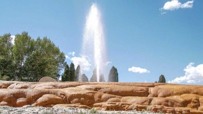

Soda Spring

Weather Summary
Currently:
High:
Wind Chill:
Humidity:
Wind Speed:
Five Day Forecast by OpenWeather©
Soda Springs, Idaho – Curiosity on the Oregon Trail.
- Kathy Weiser
Located along a shortcut on the Oregon-California Trail off of the main route to Fort Hall, Idaho is Soda Springs. These natural bubbling pools of carbonated water, caused by ancient volcanic activity, were first called “Beer Springs”. Visited by local Indians, fur traders, and trappers prior to the days of the Oregon Trail emigrations, the springs were rightfully considered to be one of the marvels of the overland trails. At the time that pioneers were ... Click here to read the Full Article!
Contact Information
📍 Simo's Weather & Forecast Headquarters
355 Wisconsin Avenue
Bethesda, MD 20814
📞 215-829-9999
✉ info@simoweather.com